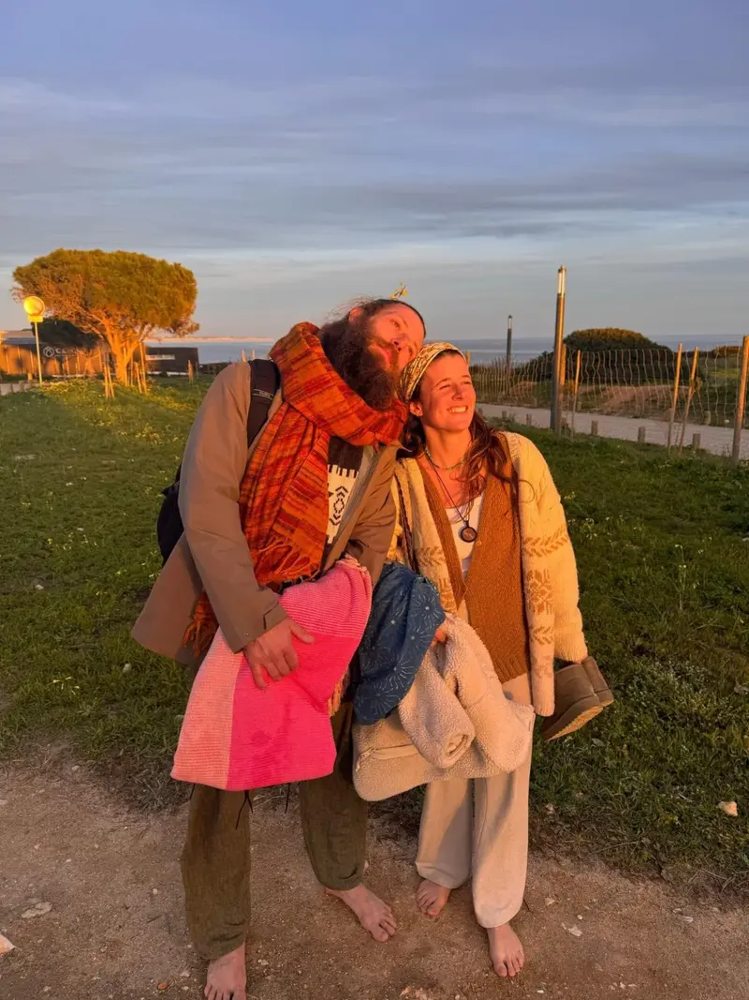
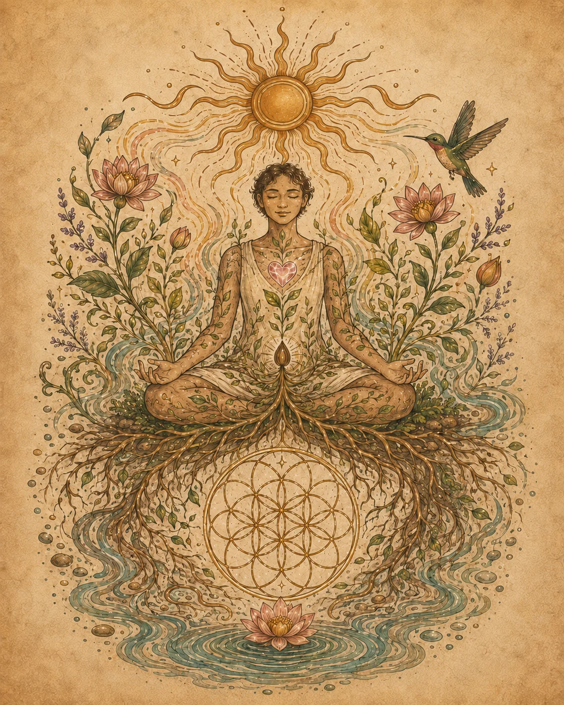

Soften
Slow enough for the nervous system to settle and for the armour of constant doing to loosen.
Inner regeneration · with Sofia
Yoga as medicine. Breath as a bridge. Movement as soul nourishment.
This is not a race through asanas or another place to perform. It is a slower journey into sensation, softness and honest connection—with your body, your senses and the quiet intelligence already within you.

Let the body set the pace.
For Sofia, yoga is less about achieving a shape and more about creating the conditions to hear yourself again.
Through Yin-inspired stillness, intuitive movement, breath and sensory awareness, the practice becomes a meeting place: between effort and ease, feeling and meaning, the life you have been carrying and the life asking to emerge.
Slow enough for the nervous system to settle and for the armour of constant doing to loosen.
Return to breath, texture, sound and sensation—the living language of the present moment.
Make space for self-knowledge and self-actualisation to grow from within, rather than from pressure.
A whole-person practice
Regeneration begins wherever relationship is restored.
Sometimes that means rebuilding soil. Sometimes it means rebuilding trust with your own body. Sofia's work honours the inseparable ecology of breath, emotion, movement, rest, belonging and the natural world.
You are not a project to fix. The invitation is to listen more deeply, move with more truth and rediscover the nourishment of being fully here.

Lived and shared
Sofia has taught across more than twenty-five retreats and circles, including yoga studios and retreat spaces in Australia, Colombia and Portugal.
Each place deepened the same understanding: people do not need another demand placed upon them. They need spaces safe enough to exhale, reconnect and meet what is true.
The next gentle step
Private and small-group offerings are taking root. If this way of practising speaks to you, write and tell Sofia where you are, what you are moving through, and what kind of support would feel nourishing.
No published programme or price is being promised here. We will listen first, then share honestly what is available and whether it feels like a good fit.